Chapter 7 Data Visualisation 1: Fundamentals
This week we are moving on to plots. You have learned how to get your data into a usable format, so now it is time for you to learn how to visualise your data. Visualisations are important as they tell us how our data looks like; help us discover outlier variables, tells us about distribution abnormalities etc. Plots also help your reader to better understand the data that you are working with.
7.1 Pre-class Resources
Before you start this week’s class, here are some pre-class readings: * Five Ways to Lie with Charts * Datasaurus Dosen - How a T-Rex convinced people to plot their data (and a fun visualisation of the principle in this thread ) * Anscombe’s Quartet - Old school version of datasaurus * Tips on Graph making * Here is a webspace with a large compilation of graphs that will help you develop a better understanding of what style you can use for the data you have and for the message you are trying to convey. The graphs also come with R code for you to adapt to data you might have. - The R Graph Gallery * Here is the ggplot2 home page with the incredibly useful cheat sheet! ggplot cheat sheet * Pre-class video
Intended Learning Outcomes
- Develop an understanding of the basics of ggplot2 and how layering works
- Learn how to make simple two layer plots
- Learn how to make plots with more than 2 layers
- Learn how to create groups in plots
- Learn how to make a variety of plots based on the type of variables we have
7.2 Pre-steps
Today, we will be working with ggplot2 which is part of tidyverse and data from the Scottish Government saved in the file free_movement_uk.csv.
Firstly, load tidyverse, and then read the data into your Global Environment as migration_scot.
7.3 Introduction to the data
This data is openly available from the Scottish Government, and it introduces the flow of people at different ages and sex into and out of the Scotland from the rest of UK (RUK) and Overseas. We have several variables to work with:
| Variable | Description |
|---|---|
| FeatureCode | Codes given by the Scottish Government |
| DateCode | Year of data collected |
| Measurement | What type of measurement it is (here we have only counts i.e. the number of people) |
| Units | Units (here we have number of people) |
| Value | The actual count (i.e. the number of people) |
| Age | Age of the counted people (separate by age, and total (sum of all age groups)) |
| Sex | Sex of the counted people (separate by sex, and total (sum all sex groups)) |
| Migration Source | Where the people are coming from (Overseas, RUK) |
| Migration Type | Whether people are coming or leaving (In, Out, and Net (people coming in less the people leaving)) |
The data is a bit messy, so let’s clean it a little bit before we can work with it. When we make plots, we want to make sure that the data we are working with contains only data that we are going to include in the plot. This helps us avoid things like double counting. For example, if we have values for males and females and total, but we do not want to give separate representations for males and females, then we would only keep information that gives us the total number.
7.4 Some warm-up tasks
Use pipes %>% for the following 4 tasks and save your data into the traffic_scot variable so that it appears in your Global Environment.
- Select only the necessary variable -
DateCode,Value,Sex,Age,MigrationSource&MigrationType(notice that some variable names include spaces) - Filter the data in column
DateCode, and keep only observations from 2016 - Keep only the total number of people by
Age(‘All’) andSex(‘Male’ or ‘Female’) - Keep only the information about the number of people that came to and left Scotland (we do not want to know about the net value)
7.5 The package GGPLOT2
We use the ggplot2 package due to its ease of layering and variety. With ggplot2 we can create beautiful and varied plots that can show us much more than just the simplicity of the base R plots. Whereas the plot/graph’s job is to visualise the data, how you visualise your data is very important. Sometimes in an attempt to show off our plotting skills, we can make the graph difficult to read. Today and next week, using ggplot2 we will streamline the process of plot creation.
7.6 Layering
Plots created with ggplot2 work in a layering format. In the simplest form we have two layers.
- Layer 1: what data are we going to use
- +
- Layer 2: how do we want it to look
Layer 1: ggplot(data, aes(x, y, …)) +
Layer 2: geom_something(…)
7.6.1 Layer 1
Plots always start with ggplot(). This initialises the plot. It is used to tell R what data we are going to use. We can also set the aesthetics of the plot which will be used to specify the axes of our plot, any groupings, variables we are going to colour based on, etc. Unless specifically overwritten in the following layers, all the data information you give in this first layer will be inherited in every following layer.
For now we are going to stick with one global specification - i.e. we are going to specify all our data in this first layer.
If you run just the first command, R is going to show you the first layer - i.e. a blank screen. R has prepared a space for you to create your plot.
Let’s try it.

Now let’s add some information. Let’s include the data and the axes. From our data traffic_scot let’s put Sex on the x-axis and Value on the y-axis. This way we can visualise how many people from each sex category came to and left Scotland overall.
What’s the difference with the empty plot above?
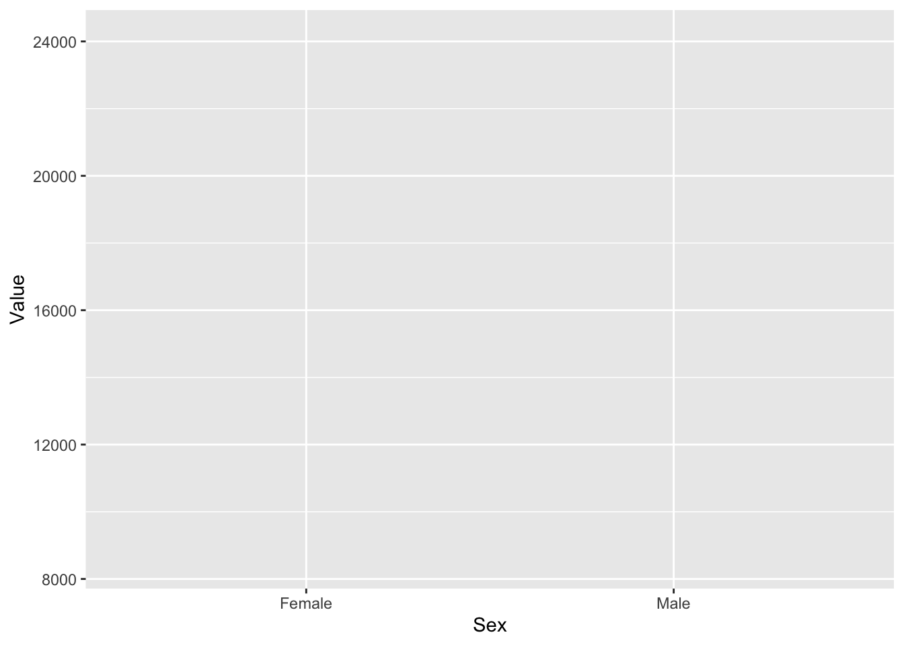
What is the difference in the produced plots from the above two lines of code? What does the first layer give you?
If you look closely, new plot we have created with the first layer of
ggplot2 gives us numbers on y-axis and the two sexes on the
x-axis. We also now have the titles of the two axes. We do not have any
view of the data because we have not told R how we want to
visualise the data. R only knows what the data is.
7.7 How do we choose the type of plot?
There are numerous plots we can choose from, and we are going to try several today.
Before plotting we need to know what types of data we want to portray.
Depending on whether our data is categorical or continuous, the type of plot that is most appropriate will change.
7.7.1 Data format
7.7.1.1 Continuous
In continuous data the distance between any two consecutive points is equivalent to the distance between any other two consecutive points - i.e. the difference between 1 and 2 is the same as the difference between 3 and 4, or 5 and 6 etc. If you think back to L2, integer and double data types will fall in this category.
7.7.1.2 Categorical
Categorical data, simply put, groups (categorises) data. The data in each group or category vary solely on one characteristic and usually those characteristics cannot be ranked - i.e. sex, race, nationality etc. If you think back to L2, logical and character data types will fall in this category.
Can you think of a time when a continuous variable can be used as categorical and/or categorical data can be used as continuous?
Continuous that is really categorical: If you have used the numbers
1, 2, 3 … to label groups in your data, then that data is
integer/double, but in reality the difference between 1 and 2 is in no
way measurable. In this case you will have to transform that column in
your data and change it from continuous to categorical, so R does not
misinterpret it. if you do not remember how to do that, go back to
L2.
Categorical that can be used as continuous: Sometimes you have questions where people answer from Strongly Agree to Strongly Disagree, and you have given numeric values to the responses: 1 = Strongly Agree, 2 = Agree, 3 = Neutral, etc. In reality, you cannot say that the distance between Strongly Agree and Agree is the same as the distance between Agree and Neutral. However, we can make the assumption that they represent equal distances and treat the numbers as a continuous scale. In fact, this is often done in Psychology and the Social Sciences.
7.7.2 Number of variables
Next we need to know the relationship between how many variables we want to show. In a 2D plot, we can usually graphically show between 1 and 3 variables with ease. After that, **usually*_** more than 2 dimensions are necessary.
Look at the five plots below. What type of data are used: categorical or continuous, or both? How many variables do we need to create these plots?
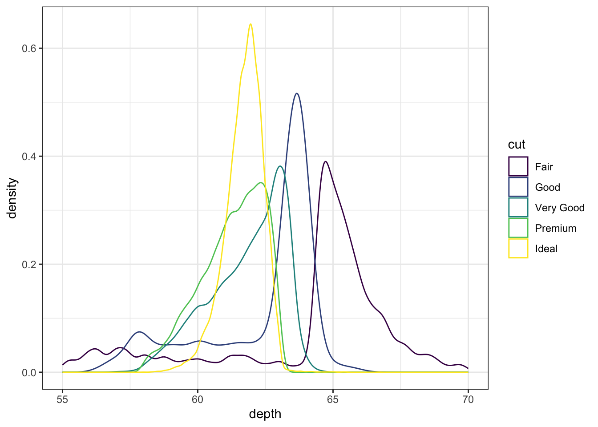
3 variables: 2 continuous (depth & density), 1 categorical (cut) In reality R only needs depth and cut, as it will calculate density for us.
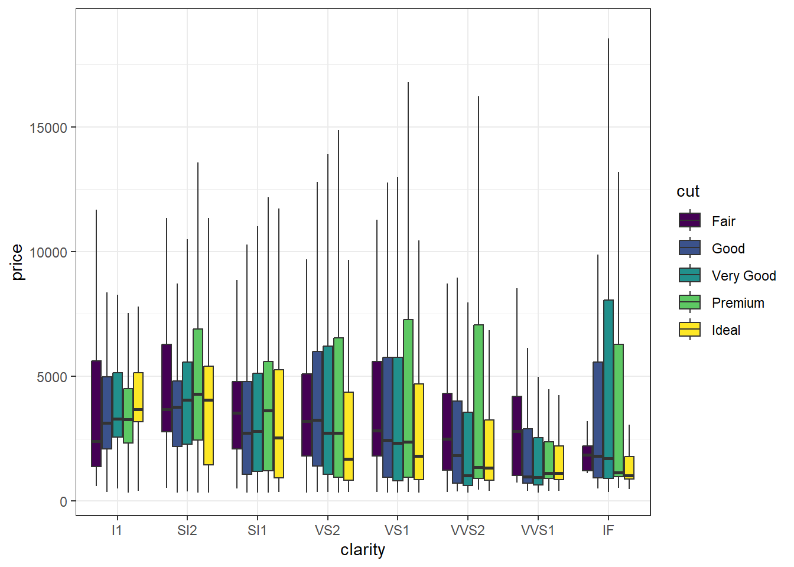
3 variables: 2 categorical (clarity & cut), 1 continuous (price)
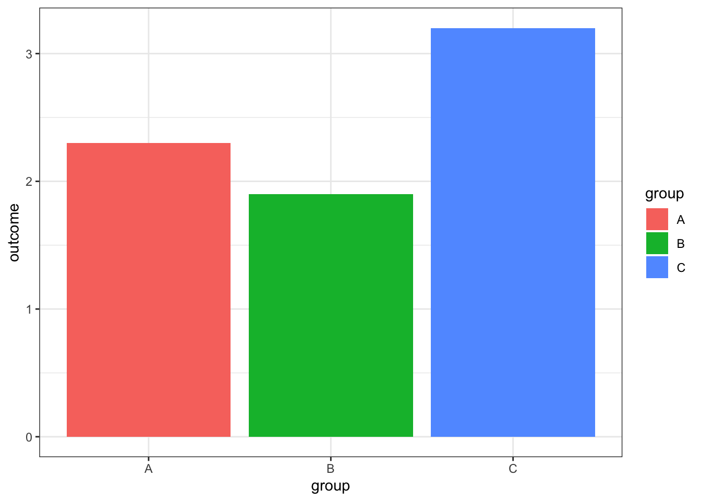
2 variables: 1 categorical (group), 1 continuous (outcome)

2 variables: 2 continuous (unemployment & date)
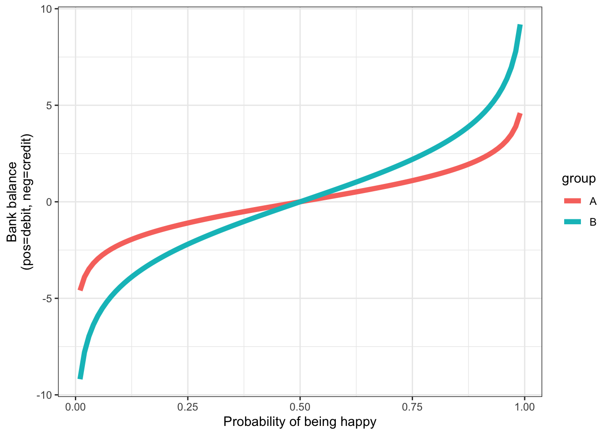
3 variables: 2 continuous (Net worth & Probability of being happy), 1 categorical (group)
Tip: Most of the time, if you cannot represent a graph in 2D then you are probably trying to show too much, and you should reconsider splitting it into multiple plots.
Let’s get back to our free movement data that we started with in the section above. Remember we wanted to visualise how many people from each sex category came to and left Scotland.
How many variables have we chosen so far? Type the number in the box below.
What types of data are we trying to plot according to our first layer? Continuous, categorical, or both?
We are using both continuous (value i.e. count of people) and categorical (sex).
7.7.3 Types of plots
There is variety of plots that we can create using ggplot2. We select the plot by adding on geom_???(). Instead of the ??? we specify the type of plot we want to make. Below are some examples, but you can see more here: ggplot2 layers.
| Geom | Plot type |
|---|---|
geom_col() geom_bar() |
Bar plots |
geom_boxplot() |
Box with whiskers plot |
geom_density() |
Density plot |
geom_histogram() |
Histogram |
geom_point() |
Scatter plot |
geom_jitter() |
Jittered points plot |
geom_line() |
Line plot |
geom_violin() |
Violin plot |
geom_smooth() |
Smoothed conditional means (often used to add a regression line) |
Let’s create a column/bar plot to visualise the data using geom_col(). What does the data look like?
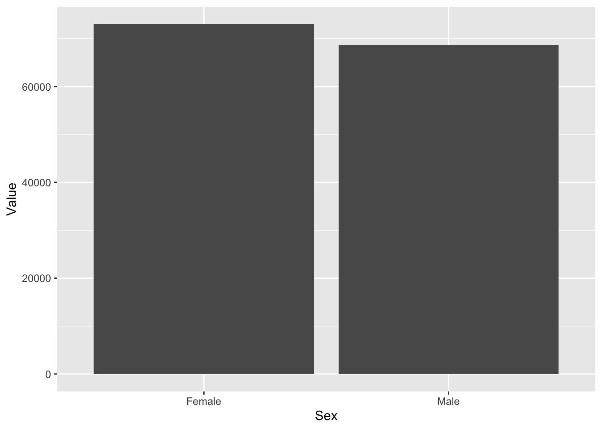
Considering what we know from the data description and the different variable in it, do we need another variable to make the plot more informative? If yes, which one?
If you worked in the immigration office, you would want to know how
many people left and how many people came to Scotland. Knowing how many
people moved about is not particularly informative. In what ways can we
differentiate the males and females who came to and who went out of
Scotland? Separating the data by MigrationType would tell
us whether the people came into or left Scotland.
7.7.4 Groupings
When we want to group data to provide a better representation, we can usually use colour, shapes etc. Most of the time, this will depend on the type of graph we want to create. If we are using line graphs, then colours are usually best. If we are using dot plots then we can use the shape as well as the colours to differentiate the different groups.
Let’s first look at colour.
Depending on the type of graph, colouring in can be done either with colour or with fill. For our column plots we use fill. If we used colour, then we would get different colours for the outlines. You can find out whether to use colour or fill by typing the name of the geom in the Help search bar or typing ?geom_col() in the console and looking at the Aesthetics section.
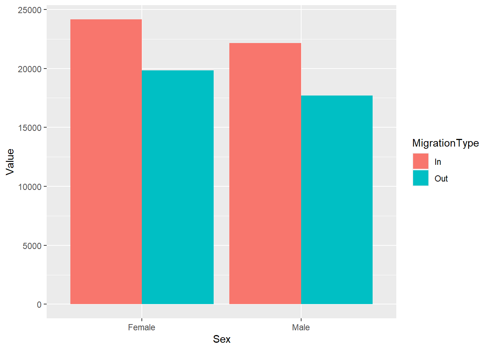
Let’s decompose the code above:
We have our data and our two variables. They are the same as before. This time we are saying that we want the data to be separated even further by MigrationType and we have given two different colours to the ‘In’ and ‘Out’ migration types using the additional argument fill.
We have also added the argument position = 'dodge' in the geom_col(). This makes sure that any groupings we create are then presented separately.
Simple task:
-
Remove
position =‘dodge’from the geom and describe what happens in your script.
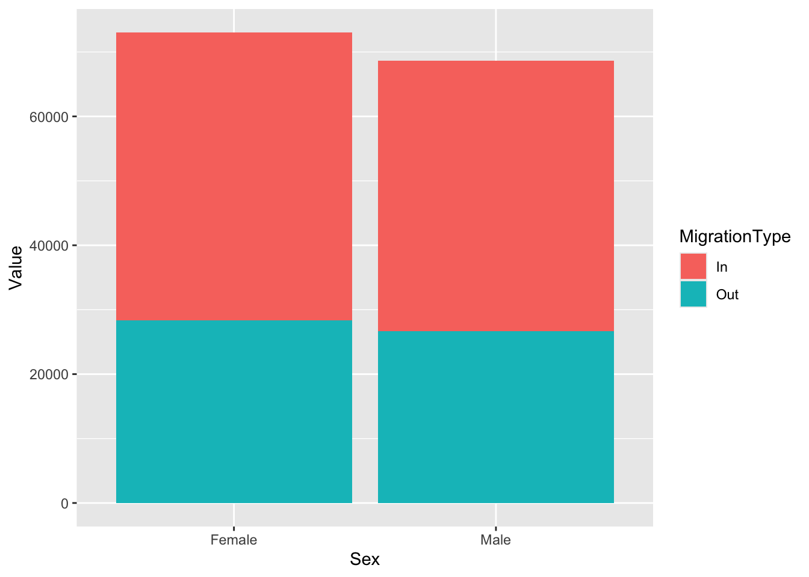
Simple task:
-
Use
position = ‘fill’and describe what happens in your script.
# create your plot here
ggplot(traffic_scot, aes(x = Sex, y = Value, fill = MigrationType)) +
geom_col(position = 'fill')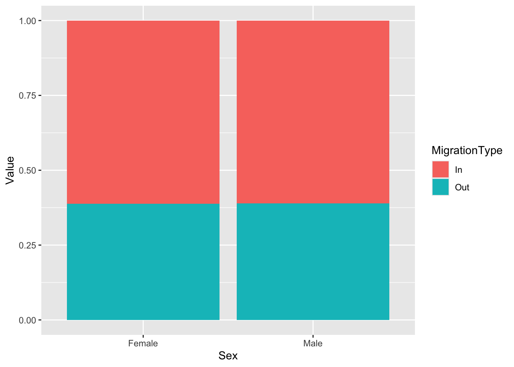
What are the differences between ‘dodge’, ‘fill’ and no position
argument? (Use ?geom_col() to help you).
If we use position = ‘fill’ it stacks our data and it
also gives us proportions: check the y-axis between the plot with
position = ‘fill’ and the one without any position
arguments. Whereas the plot without the position argument just stacks
information on top of one another, position = ‘fill’ shows
relative proportions. Use the Help menu or put ? in the
console in front of the function you want to know more about, for
example ?geom_col().
The argument position is an argument specific for the geom_col. It is just one example of an additional argument that helps us to represent the data better. These types of arguments allow for better control over the plots that we create. To find what arguments each geom has, look for it in the Help section or put ? in the Console in front of the function.
Geoms in ggplot2 have a large selection of arguments to allow you to adjust your visualisations. This is what makes it one of the most preferred visualisation packages by the R community.
7.7.4.1 More groupings
Now let’s imagine that we want to know whether the individuals are moving to/from Overseas or RUK as well as all the information we have so far. Should we create more groups? Let’s try also using colour as a grouping way, based on MigrationSource.
ggplot(traffic_scot, aes(x = Sex, y = Value, fill = MigrationType, colour = MigrationSource)) +
geom_col(position = 'dodge')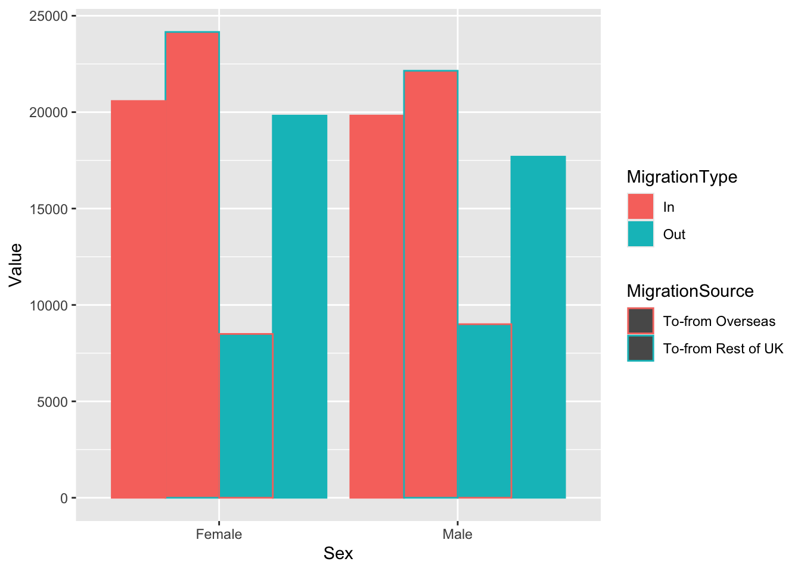
Here I have used the argument colour to give different borders to the migration sources. As you can see, this makes it much more difficult to see. Next week, we will work on separating the plots.
Would you think there is a better way to represent the data? Write it down in your stub file.
7.8 Now let’s have a look at different plots with more complexity
Imagine you want to see the difference in the number of people coming into and moving out of Scotland from both the RUK and Overseas throughout the years, but you do not want to know the net flow of people, their age or their sex.
What variables would you use? Write them down in your stub file.
DateCode, MigrationType, MigrationSource, Value
First, let’s get the data we will need. We want our selected variables from above, and the overall data for the rest of the variables i.e. the ‘all’ categories for Age, and Sex. Remember we want to look at people moving in and out, so we do not want the net MigrationType. Save the output into the variable traffic_scot2 so that it appears in your Global Environment.
What type of data are these variables?
- DateCode:
- Value:
- Sex:
- Migration Source:
- Migration Type:
So we need to use a different type of plot - one that can portray continuous data well enough.
Good way to portray data like this are point graphs (i.e. scatter plots) and line graphs.
We have several variables again. It will help if we separate them with different aesthetics.
Let’s start with a scatter plot.
ggplot(traffic_scot2, aes(DateCode, Value,
shape = MigrationSource,
colour = MigrationType)) +
geom_point() 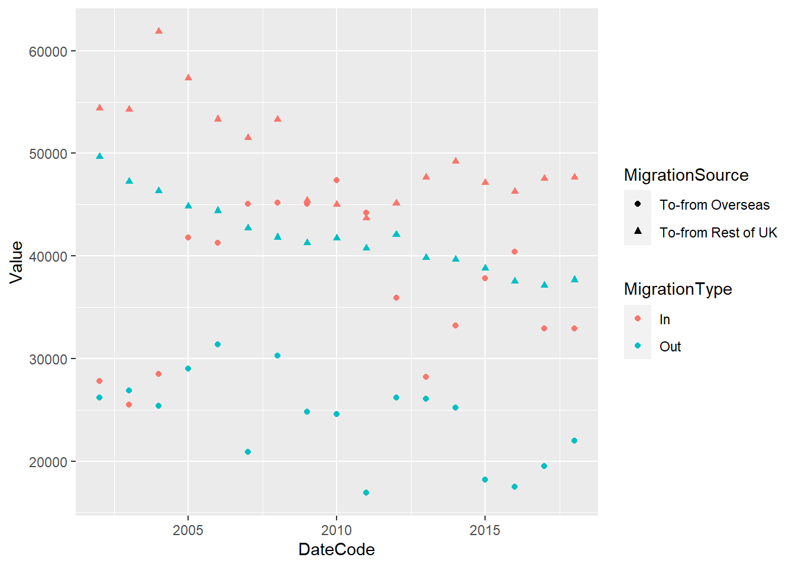
This seems difficult to look at. Let’s make it easier by adding a line that connects the data. We can do this by adding another Layer.
ggplot(traffic_scot2, aes(DateCode, Value,
shape = MigrationSource,
colour = MigrationType)) +
geom_point() +
geom_line()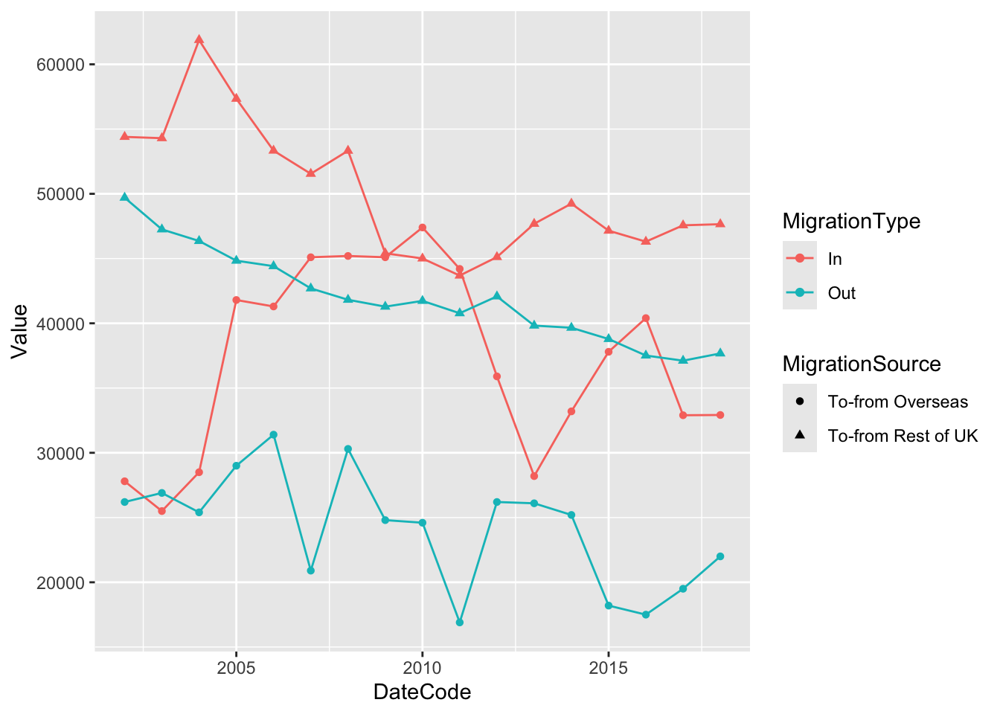
Question: How do we know that the line graph is going to connect the
MigrationType and not the MigrationSource?
(Think about the aesthetics of geom_line and
geom_point)
If we look up geom_point() and geom_line()
we can see the type of aesthetics that they take. Look them up in the
Help tab or by typing ?geom_point() in the
console. There you will find a section called aesthetics, which will
tell you the aesthetics each of them can have. Because lines cannot use
an aesthetic of shape, it will only inherit the colour aesthetic from
ggplot().
Scatter and dot plots are excellent representations of the data as they show us where each data point is. In this way no data can hide behind a bar chart.
7.9 Other plots
Let’s make some more plots.
Violin plots and Box plots We need a continuous variable and a categorical variable for both of them. In both of these the categorical variable usually goes on the x-axis and the continuous on the y axis.
Let’s get back to the original data and plot the distribution of all females entering and leaving Scotland from overseas, from all ages. For this, we need to tidy the data into what we need and store it into the variable female_migration.
female_migration <- migration_scot %>%
filter(Sex == 'Female',
MigrationSource == 'To-from Overseas',
Age == 'All',
MigrationType != 'Net')
# make box plots
ggplot(female_migration, aes(x = MigrationType, y = Value, fill = MigrationType)) +
geom_boxplot()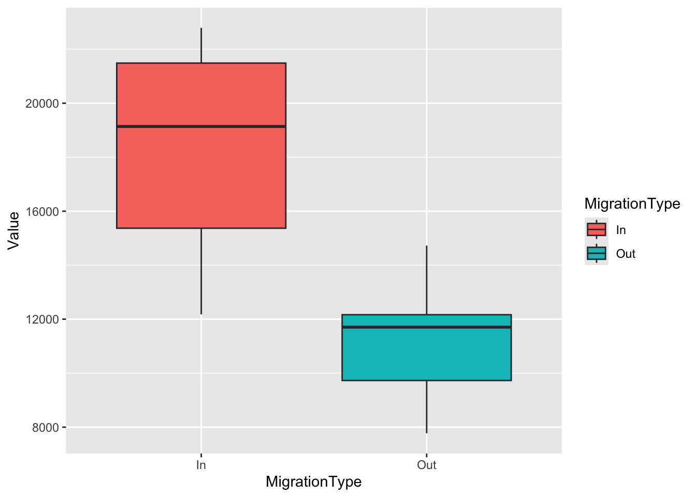
#make violin plots
ggplot(female_migration, aes(x = MigrationType, y = Value, fill = MigrationType)) +
geom_violin()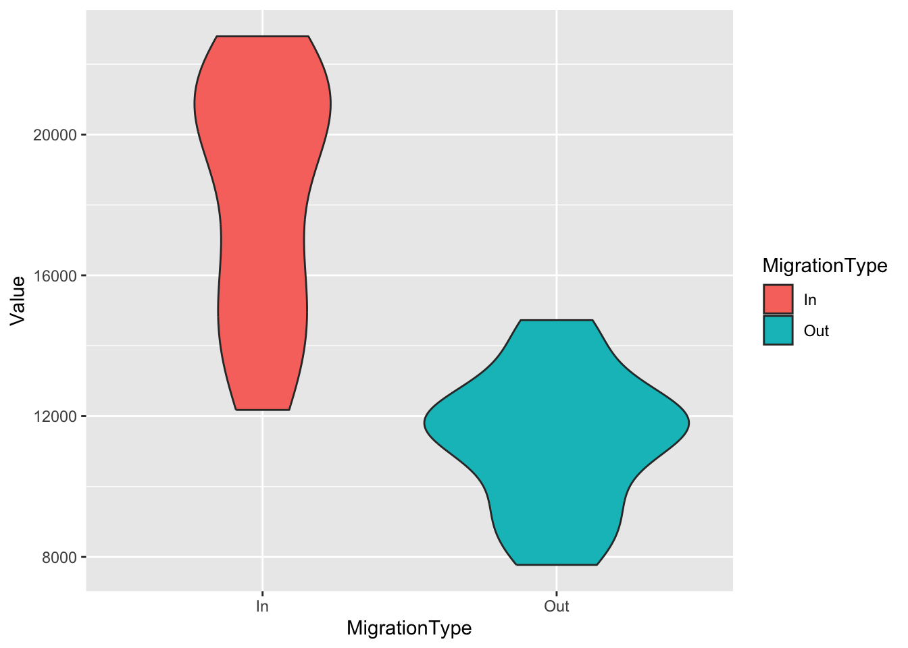
These plots show us the distribution of females entering and leaving Scotland. What we can tell is that over the years is that we haven’t had less than 12000 women coming to Scotland and no more than 16000 women leaving. These types of plots also tell us where the bulk of the data is. We can see from the violin plots that the most common number of females coming into Scotland throughout the years is between 22000 and 18000. Box plots on the other hand, tell you where the middle 50% of the data are.
Your turn
Using the data for this class follow the instructions. Remember, you
can use View() in the console to look at your data, or
click on the data variable in your Global Environment. This
can help you to make your choices for the steps bellow and with the
exact spelling. Start from the original dataset we loaded in the
beginning traffic_scot. Use pipes %>% for
the first 5 steps and save the output into a variable
my_data. Use that data to create three separate plots for
steps 6, 7 and 8.
- Select two different years.
- Select two different age groups.
- Select the total for both sex ( i.e. ‘all’).
- Select migration In and Out of Scotland.
-
Pick whether you are going to look at
To-from Rest of UKorTo-from Overseas. -
Plot the overall people, regardless of age and year, that have moved
into and left Scotland using
geom_col(). Save the plot in the variable q6 into yourGlobal Environment. -
Create a new plot using
geom_col()that shows the differences between the two years you have selected, regardless of age. Save the plot in the variable q7 into yourGlobal Environment. - Plot the differences between the two ages, regardless of year.
## Rows: 28152 Columns: 9
## ── Column specification ────────────────────────────────────────────────────────────────────────────────────────────────────────────────────────────────────────────────────────────
## Delimiter: ","
## chr (7): FeatureCode, Measurement, Units, Age, Sex, Migration Source, Migrat...
## dbl (2): DateCode, Value
##
## ℹ Use `spec()` to retrieve the full column specification for this data.
## ℹ Specify the column types or set `show_col_types = FALSE` to quiet this message.my_data <- traffic_scot %>%
filter(Age %in% c('21 years', '41 years')) %>%
select(DateCode, Value, Age, Sex,
MigrationSource=`Migration Source`, MigrationType=`Migration Type`) %>%
filter(DateCode %in% c('2013', '2018'),
MigrationType != 'Net',
MigrationSource == 'To-from Overseas',
Sex == 'All')
q6 <- ggplot(my_data, aes(MigrationType, Value)) +
geom_col()
q6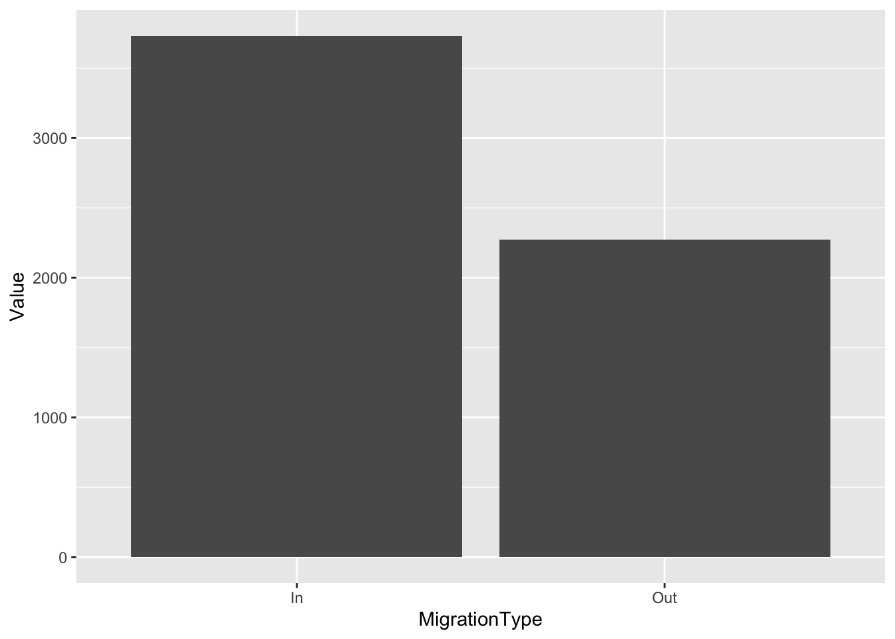
q7 <- ggplot(my_data, aes(MigrationType, Value, fill = as.character(DateCode))) +
geom_col(position = 'dodge')
q7 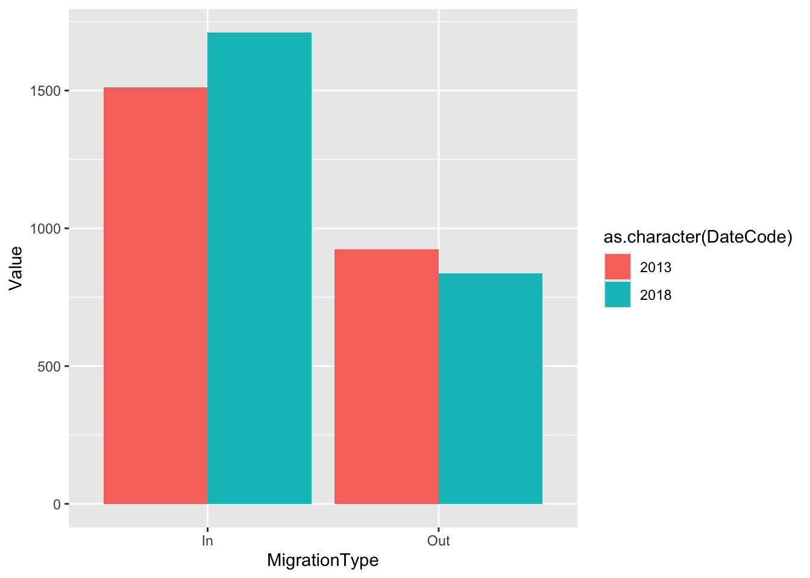
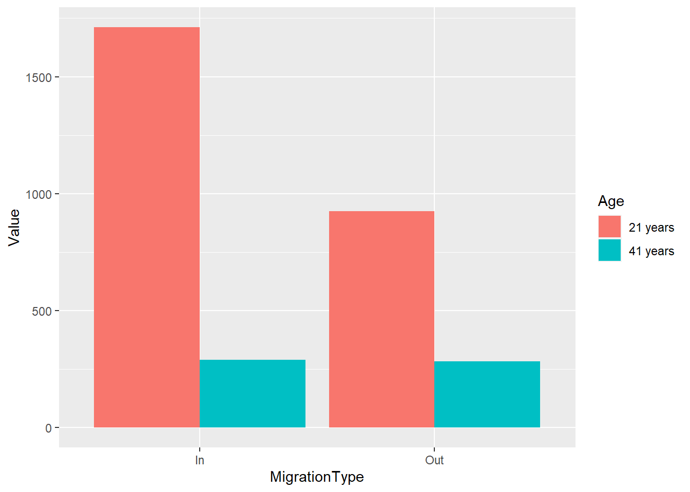